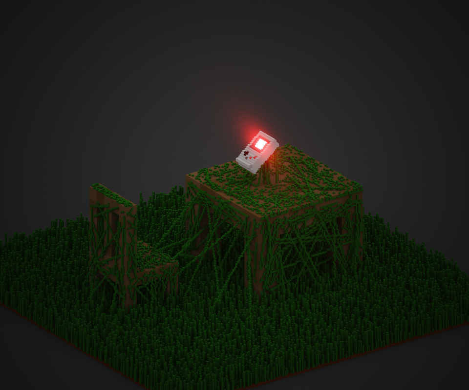
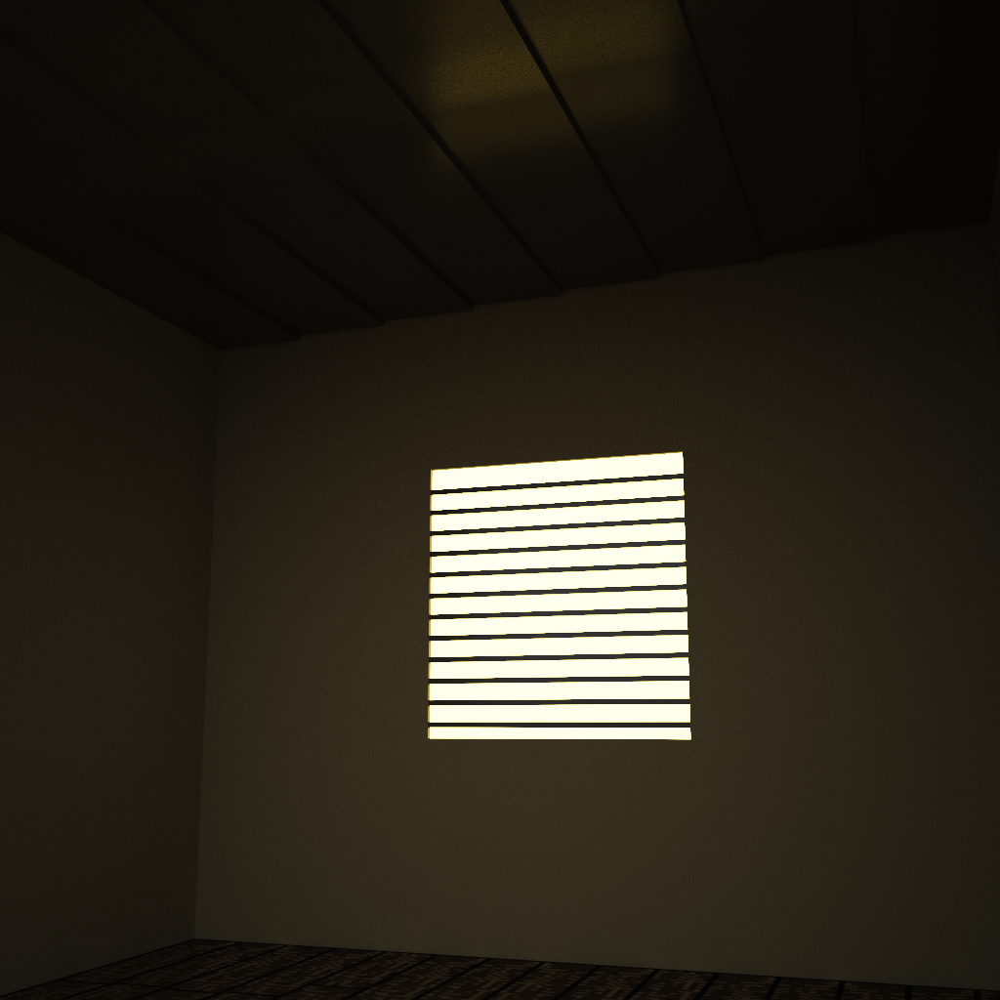
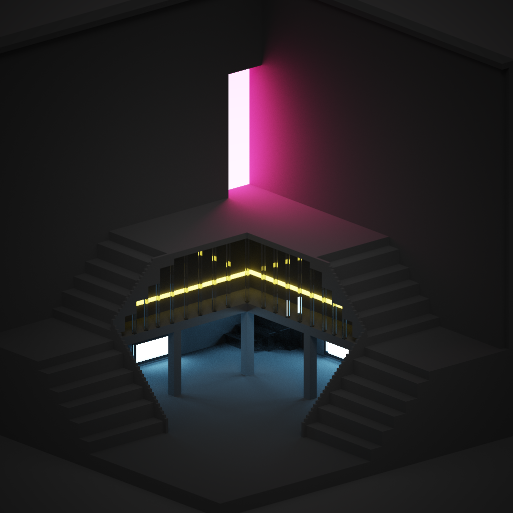
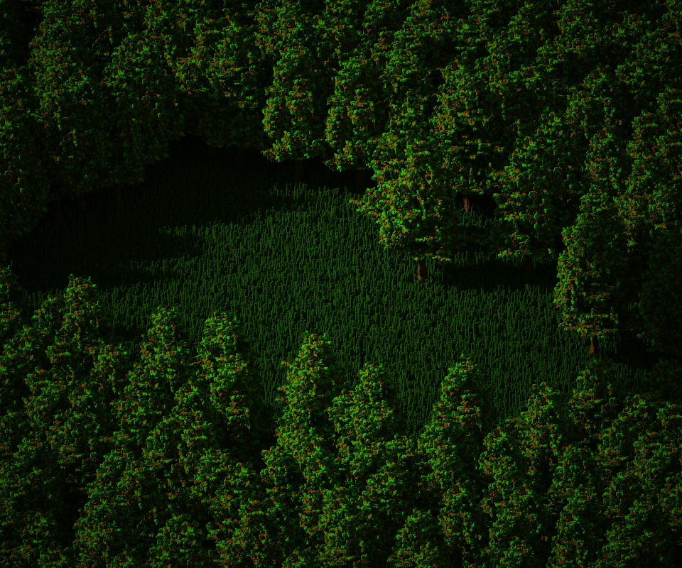
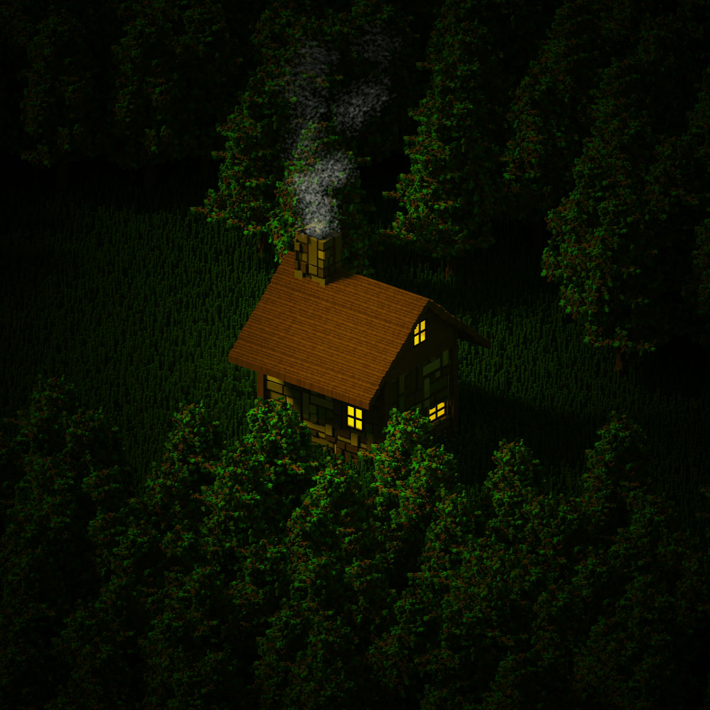
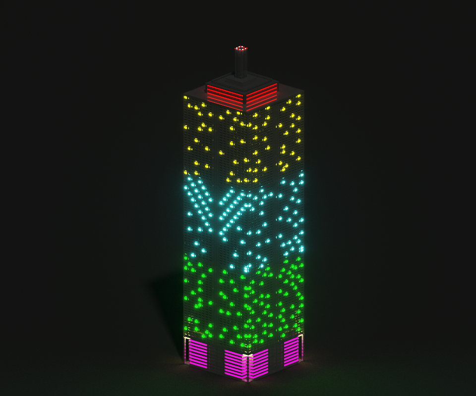

this is my first ever forte into voxel art. I wasn't really sure what I was doing with this so i turned it into a test scene where I could mess around. Its alright but not great

I really wanted to try out different scripts for grass and I already had some wooden furniture assets that I'd made prior so I decided to throw this together
I am very happy with how it turned out, although I didnt quite get the render settings how I would have liked them

this was largely a test scene to put a floor texture I made. I am not too happy with the way this one turned out, especially because you cant even see most of the floor lmao

I had just discovered lighting effects and materials in this one and I wanted a good excuse to abuse them XD. Lots of bloom, lots of different colours. My only regret is not adding more glass or different materials

I started off this project by wanting to make a simple tree using a tutorial I found and boy howdy did that morph into something much different. This was and still is the start to my largest project to date and I think I took up the maximum world space with this one. I copied the tree a bunch of times and then used a grass shader to make the floor look normal.

by far my favorite piece to date. This took around about 15 hours to complete from beginning to clicking render. I used a floor tile shader that I added some depth to for the walls and then made a gradient for the roof and door. The light coming from the inside is actually just a floating yellow cube and the back 2 walls are just flat nothingness but you can't see that lol. Super happy with this one. Sort of messed up the lighting and sun orientation but who cares it looks ok

after the cabin project I wanted to try a different style so I tried to create a skyscraper. I'm glad that I did this but I do not think that industrialist/urban scenes are my forte or really my passion. This was a fun project but it reinforced my passion for nature scenes and the like
thats all my art for now. I'll create some more later but I think my next endeavor will be game design/programming.
software I use to make this (its a link, click on it)